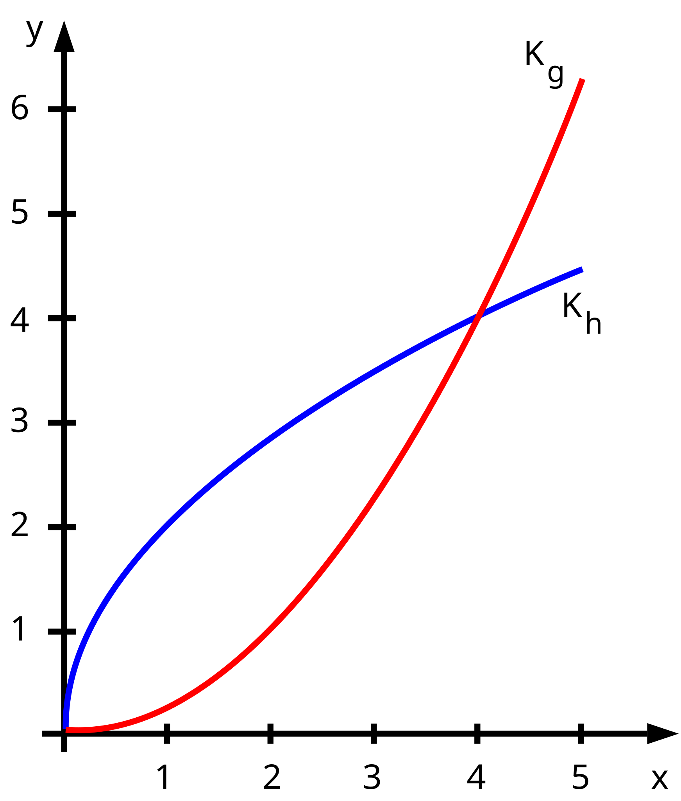
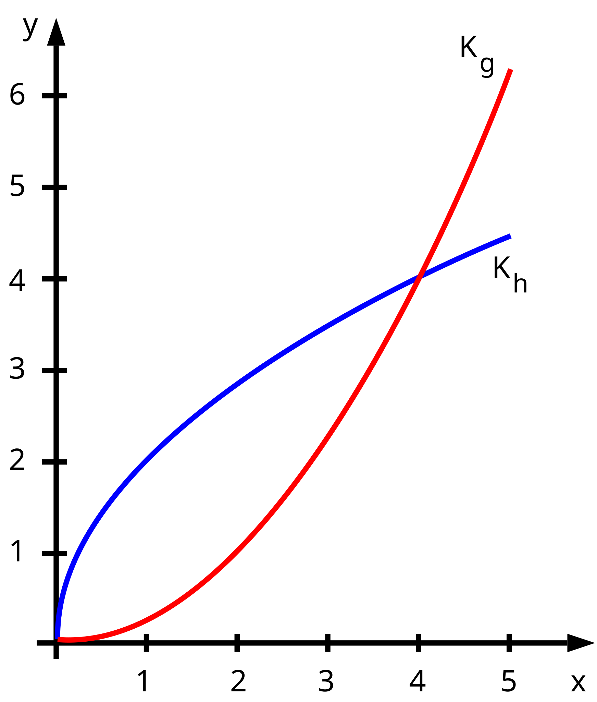
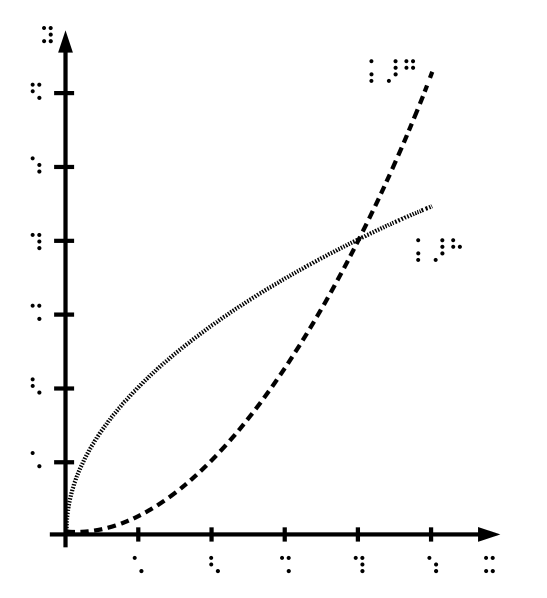

Tastaturbedienbarkeit
Sprachausgabe und Vergrößerung
Text ist nicht gleich Text!
TOPTHEMA VORMITTAGS: Bildungsgerechtigkeit
Die Bedeutung assistiver Hilfsmittel und digitaler Barrierefreiheit für Teilhabe und Inklusion von Schülerinnen und Schülern mit Behinderung
- 1.
Arbeit mit Screenreader und Braillezeile - 3.
Digitale Barrieren - 2.
Arbeit mit Vergrößerungssoftware - 4.
Anforderungen an digitale Bildungsmedien
Vektorgrafik vs Pixelgrafik
 

Alternativen zur Ergänzung
Abbildung als taktile Vorlage
Unterschiedliche Darstellungen

3D-Druck Modell als Alternative

Mathe mit der Sprachausgabe
Bruchgleichungen
Eine Bildbeschreibung sollte doch ausreichen, oder?Bruch x plus 4 Bruchstrich x Ende Bruch ist gleich Bruch 16 Bruchstrich x Quadrat minus 4x Ende Bruch minus Bruch 4 Bruchstrich x minus 4 Ende Bruch
Fazit: so ist Mathematik nicht möglich!
Eine schriftliche Repräsentation ist zwingend erforderlich. $$\frac{x +4}{x} =\frac{16}{x^2 -4x} -\frac{4}{x -4}$$LaTeX als Mathematikschrift
\frac{x +4}{x} =\frac{16}{x^2 -4x} -\frac{4}{x -4}